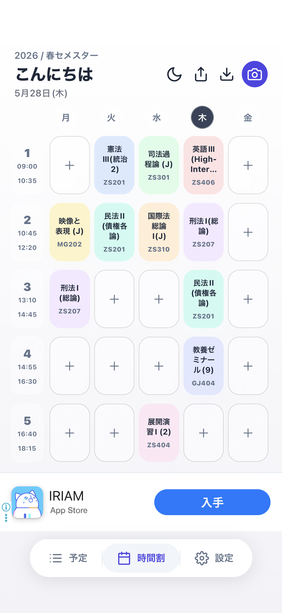
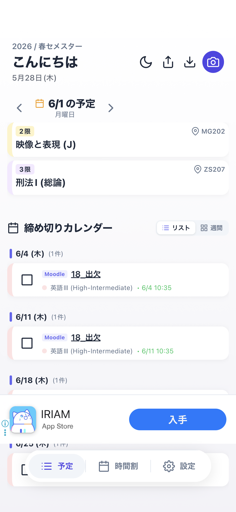
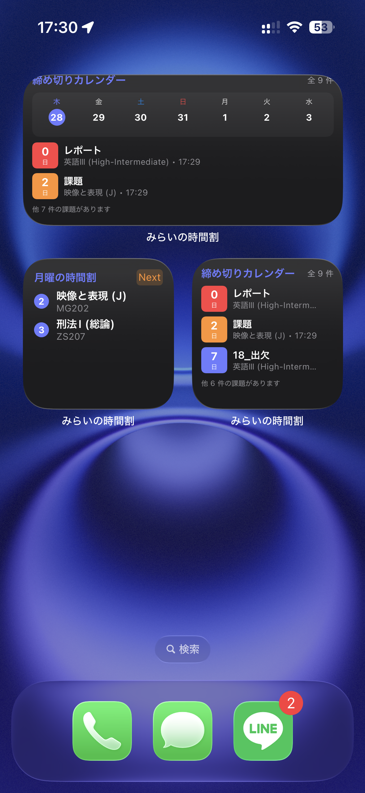
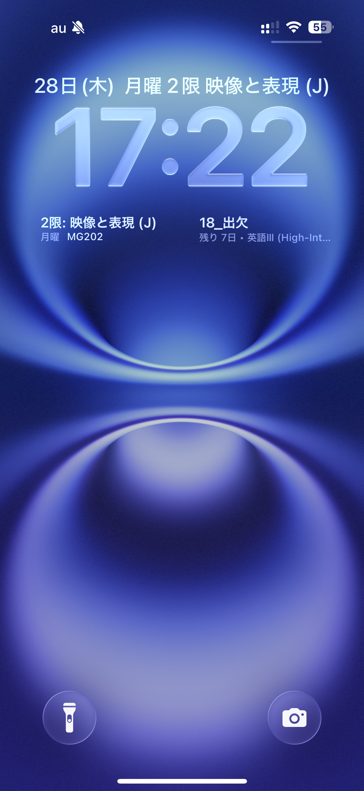
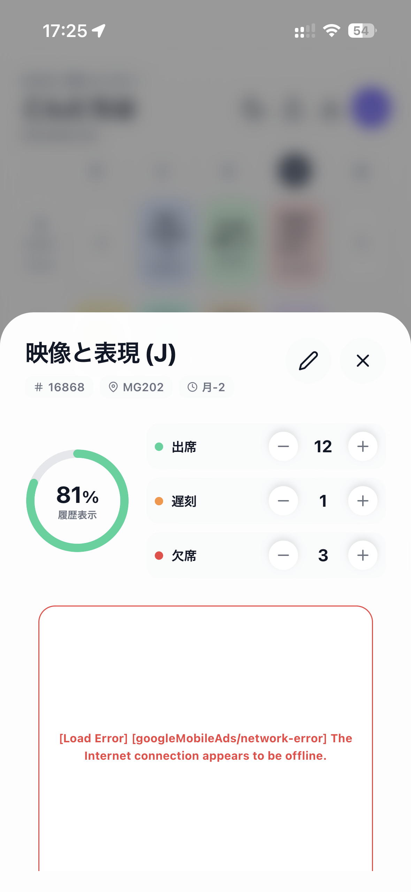
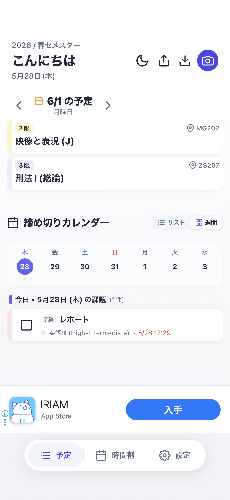

「みらいの時間割」は、大学Moodle自動同期、AIカメラ時間割スキャン、出欠管理、そしてウィジェット機能を完備した大学生必須の学業効率化アプリです。
iOS 16.0以降 / Android 8.0以降に対応（基本無料）

タブをタップして、みらいの時間割アプリが提供する極めて快適なユーザーインターフェースと便利な機能を体験してください。
春/秋セメスターごとに時間割をマッピング。曜日・時限ごとの講義名、教室、教授名をカラーコード付きの美しいグリッドで直感的に把握できます。
各授業に関連する課題やテスト、レポート締め切りを一覧管理。カレンダーや残り日数の表示を切り替えて、出し忘れを100%防ぎます。
ホーム画面に大・中・小のウィジェットを配置。アプリを開く必要すらなく、次の授業位置や課題の締切期限が一瞬でチェック可能です。


授業の登録から課題の管理まで、大学生に本当に必要な機能だけを妥協なく詰め込みました。
大学のWebサイトや配布物の時間割をカメラでパシャリと撮影するだけで、AIが講義スケジュールを自動解析してアプリに一括インポート。面倒な手入力のストレスから解放されます。
iOSのロック画面ウィジェットに完全対応。スマホを手に取り、画面を起動するだけで、現在の授業・教室位置・残り出欠情報をすぐ確認できます。

各授業の出欠数をタップだけでカウント。出席率を自動パーセント計算して表示するため、単位取得に必要な出席基準をきめ細かくサポートします。

大学のMoodleポータルとバックグラウンドで自動同期。新しく追加された課題やレポート、小テストの期限を自動でカレンダーに反映し、期日前にお知らせします。（一部大学ポータルにも対応）
入力した予定や個人データは、すべてユーザー自身の端末内データベースに暗号化され安全に保存されます。クラウド上のサーバーに勝手に送信されることはありません。
週単位で締切予定を一覧化する「締め切りカレンダー」機能を搭載。週の課題ボリュームが一目で分かり、学習予定が組み立てやすくなります。

「みらいの時間割」アプリで、快適で遅れのない最高水準のキャンパスライフを今すぐ始めましょう。